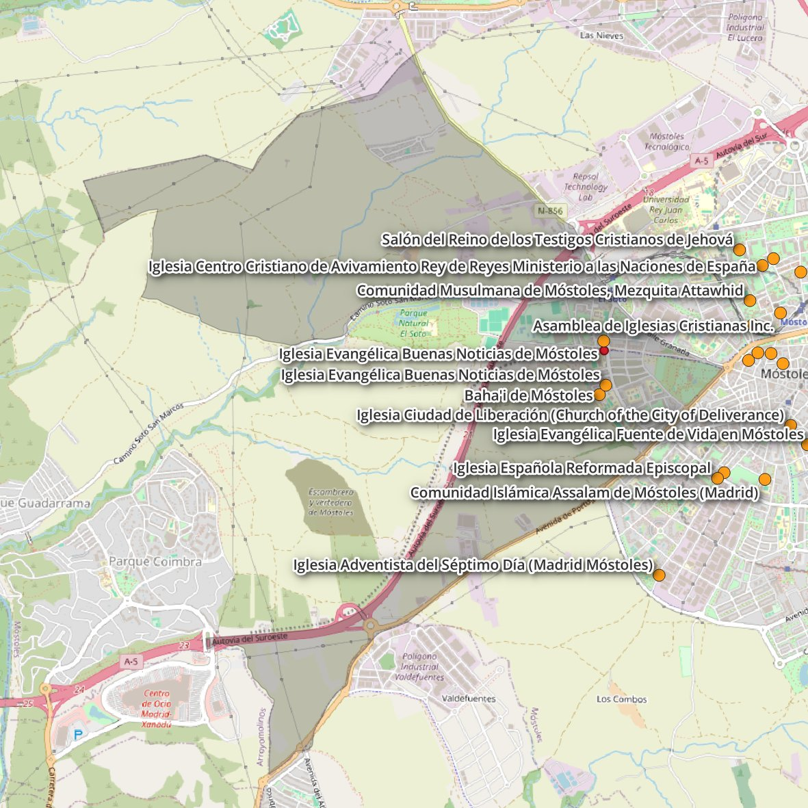
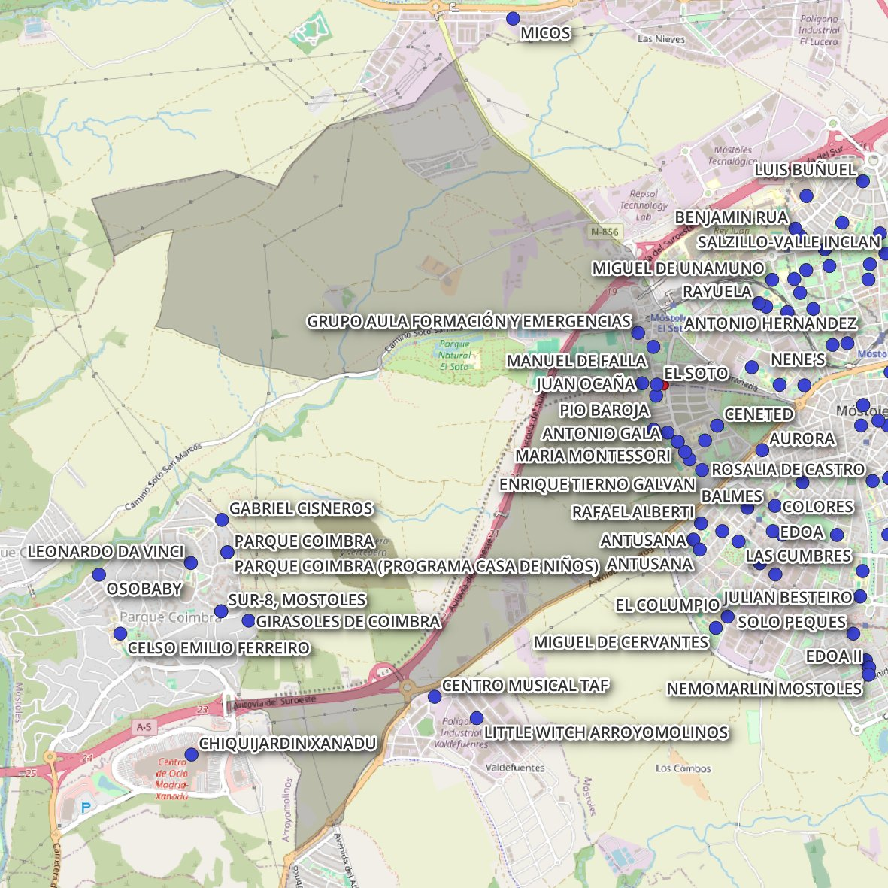

Puntos de interés en el territorio parroquial
Parroquia Nuestra Señora del Rosario y de la Esperanza (Móstoles) · Arciprestazgo de Móstoles
Entidades religiosas no católicas

3 entidades religiosas no católicas en el territorio de la parroquia.
Evangélicos (2)
- Iglesia Evangélica Buenas Noticias de MóstolesCalle de los Hermanos Grimm 76, Móstoles
- Iglesia Evangélica Buenas Noticias de MóstolesAvenida de Iker Casillas 42, Móstoles
Baha'is (1)
- Baha'i de MóstolesCalle Hermanos Grimm 15, Móstoles
Fuente: Registro de Entidades Religiosas del Ministerio de la Presidencia, Justicia y Relaciones con las Cortes. Situación en el mapa: dirección geocodificada con CartoCiudad (IGN) o Nominatim (OpenStreetMap).
Centros educativos

11 centros educativos en el territorio de la parroquia (público: 9, privado concertado: 1, privado: 1).
| Centro | Tipo | Titularidad | Domicilio | Web |
|---|---|---|---|---|
| ALFONSO R. CASTELAO | Colegio de educación infantil y primaria | Público | Calle de Azorín, 24, 28935 Móstoles | Página web |
| ANTONIO GALA | Instituto de educación secundaria | Público | Calle Hermanos Grimm, 3, 28935 Móstoles | Página web |
| CENETED | Centro autorizado de enseñanzas deportivas grado medio y superior | Privado | Calle de Benito Pérez Galdós, 13, 28935 Móstoles | Página web |
| COLEGIO VILLAEUROPA | Centro privado de educación infantil, primaria y secundaria | Privado concertado | Calle de Benito Pérez Galdós, 13, 28935 Móstoles | |
| EL SOTO | Escuela infantil | Público | Avenida Iker Casillas, 23, 28935 Móstoles | Página web |
| ESCUELA DE HOSTELERIA Y TURISMO SIMONE ORTEGA | Centro público integrado de formación profesional | Público | Calle del Pintor Velázquez, 64, 28935 Móstoles | Página web |
| FELIPE TRIGO | Instituto de educación secundaria | Público | Calle del Pintor Velázquez, 66, 28935 Móstoles | Página web |
| JUAN OCAÑA | Colegio de educación infantil y primaria | Público | Avenida de los Deportes, 25, 28935 Móstoles | Página web |
| MANUEL DE FALLA | Instituto de educación secundaria | Público | Avenida Olímpica, 16, 28935 Móstoles | Página web |
| MARIA MONTESSORI | Colegio de educación infantil y primaria | Público | Calle del Pintor Velázquez, 62, 28935 Móstoles | Página web |
| PIO BAROJA | Colegio de educación infantil y primaria | Público | Calle de los Hermanos Machado, 3, 28935 Móstoles | Página web |
Fuente: registro de centros educativos de la Comunidad de Madrid. Solo se recogen los centros de alta.